Þetta verkefni skiptist í þrennt; tvö einstaklingsverkefni og eitt hópverkefni. Í einstaklingsverkefninu átti annarsvegar að hanna módel fyrir 3D prentun. Skilyrðin voru að ekki væri hægt að framleiða hlutinn með frádráttar (e. subtractive) framleiðslu og að hluturinn væri ekki úr meira en 100g af plasti. Hitt einstaklingsverkefnið var að velja einhvern hlut til að 3D skanna.
Í hópverkefninu átti að velja 3D prentara og ákvarða hönnunar reglur/þvinganir fyrir hann og þar af leiðandi módelin okkar.
Fjallað verður um einstaklingsverkefnin hér á þessari síðu en HÉR má lesa um hópverkefnið.
Ég vildi gjarnan hanna eitthvað fallegt og nothæft og var lengi að ákveða hvað ég ætti að hanna í þessu verkefni. Eftir langa umhugsun ákvað ég að búa til kertastjaka fyrir eitt lítið teljós (sprittkerti). Ég hugsaði með mér að ef ég næði að gera nægilega fallegan kertastjaka yrði gaman að eiga hann til framtíðar sem eitthvað sem maður hefur búið til sjálfur.
Ég byrjaði á að ná í eitt stk. sprittkerti og mældi það og svo, án þess að vera búin að rissa neitt upp í höndunum, fór ég beint í að teikna í Fusion360. Sprittkertið mældist 3,75 cm í þvermál, og 1,5 cm á hæð. Ég ákvað því að hafa holuna fyrir kertið 4,2 cm í þvermál og 1,3 cm á hæð svo ekki væri erfitt að ná kertinu upp úr. Ég var einnig ekki viss um hvaða efni væri boðið upp á að prenta úr í FabLab og hrædd um að hitinn frá kertinu gæti haft slæm áhrif á það ef holan fyrir kertið væri of þröng og þótti þetta því öruggari víddir. Ég vildi hafa stjakann dálítið massívan og því hafði ég veggjaþykkt holunnar fyrir kertið sem 6,5 mm. Botninn á holunni hafði ég 3 mm þykkan, sem og aðra veggi í módelinu. Það sem nú var komið af hönnuninni má sjá á myndinni hér að neðan.
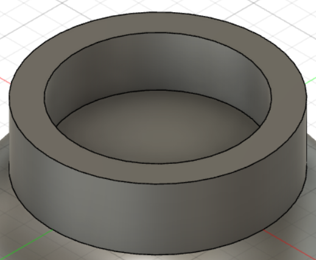Næst teiknaði ég línu 5 cm niður úr miðju botnsins á holunni fyrir kertið og útbjó út frá henni bogann sem sjá má á myndinni hér að neðan. Veggjaþykktina hafði ég sem 3 mm, eins og áður hefur komið fram.
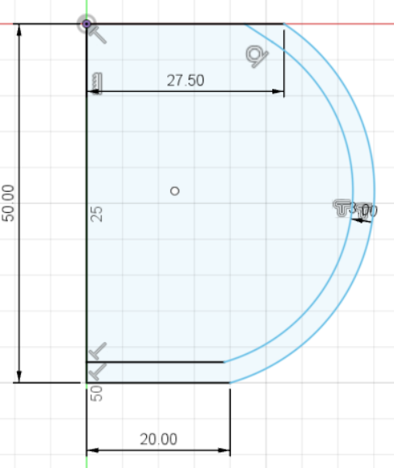Til að gera bogann að heilum hlut valdi ég "Revolve" undir "Solid" og valdi að revolve-a um 360°. Nú leit módelið svona út:
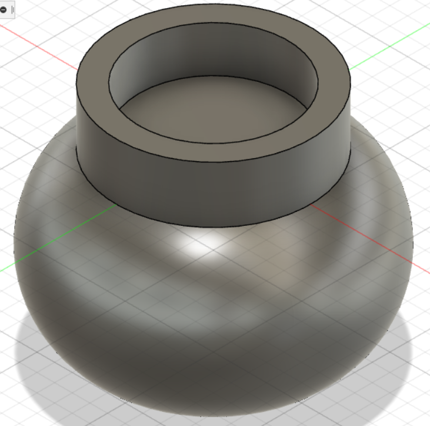Ég var ánægð með módelið eins og það var orðið en fannst vanta eitthvað upp á svo það væri öruggt að ekki væri hægt að framleiða hlutinn með subtractive framleiðsluaðferð. Ég ákvað því að setja tígul-laga göt á stjakann. Ég byrjaði á að teikna einn tígul fyrir miðju á neðri hlutanum og skera í gegnum módelið með honum. Til að skera með honum allan hringinn bjó ég til "circular pattern" og valdi að láta tígulinn birtast 20 sinnum með jöfnu millibili. Útkomuna má sjá á myndinni hér að neðan:
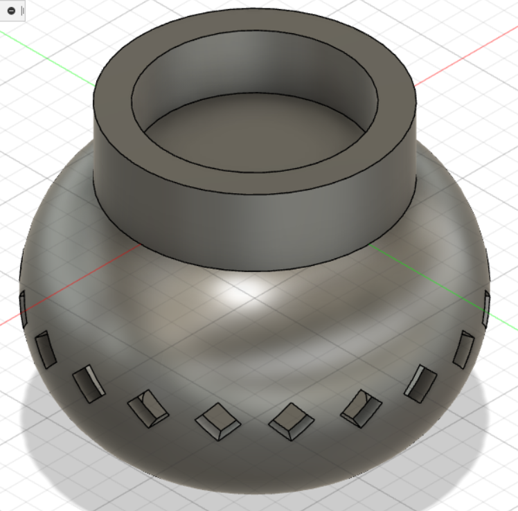Þetta fannst mér flott en ég vildi meira mynstur. Ég ákvað því að teikna tvo tígla í viðbót, einn fyrir ofan og einn fyrir neðan fyrri tígulinn og gera með þeim mynstur á sama hátt og með fyrri tíglinum. Ég ákváð þó að láta þetta seinna hringmynstur vera bara 10 sinnum yfir hringinn í stað 20, annað hefði verið of mikið. Lokaútkoman var þá eftirfarandi:
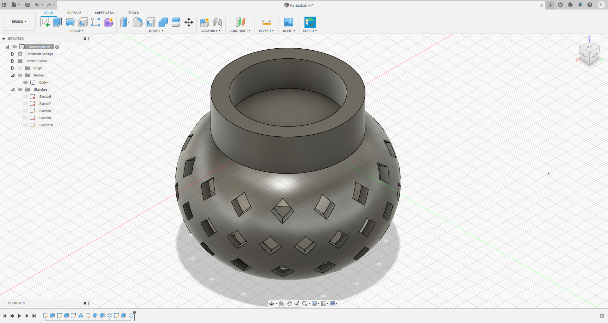Nú var ég orðin ánægð með útkomuna og var næsta skref að velja 3D prentara og framkvæma prófun á honum, sem var hópverkefnis-hluti verkefnisins.
Eftir að búið var að framkvæma prófunina ákvað ég að breyta ekki neinu í hönnuninni og gat því farið að huga að því að færa módelið yfir í hugbúnað fyrir 3D prentara. Þá þurfti ég að vista skrána sem .STL skrá og gerði það með því að hægri smella á "body"-ið og velja "Save As STL". Ég valdi formatið sem Binary og "Refinement" sem medium eins og sjá má á myndinni hér að neðan.
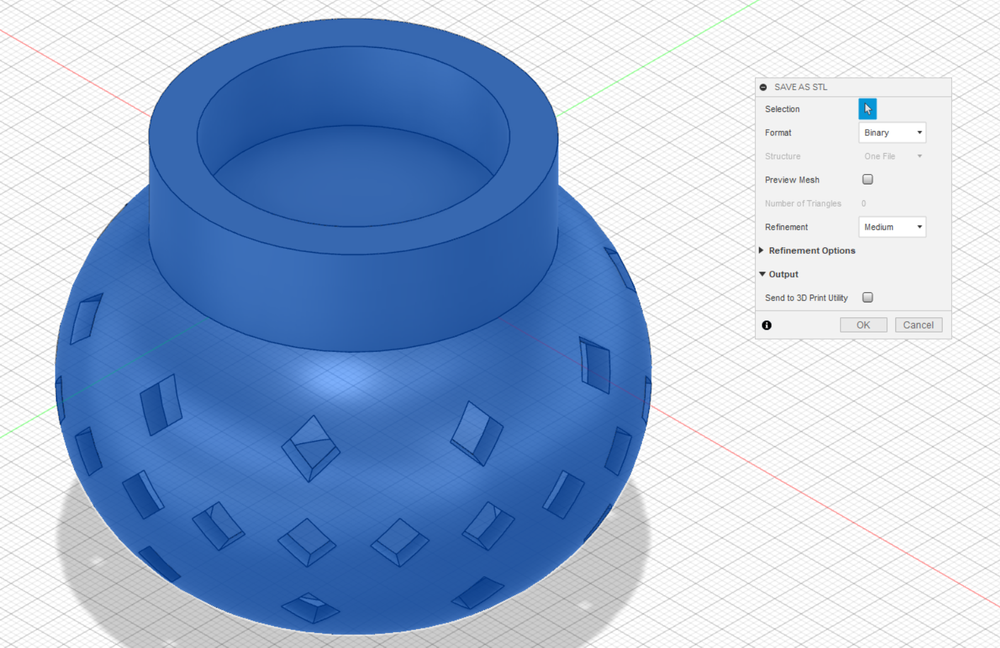Eins og fram kom í hópverkefninu völdum við Ultimaker 3 prentara til að prenta út hönnunina okkar og opnaði ég því módelið mitt í forritinu Cura. Með sömu stillingum og við völdum í hópverkefninu sá ég að hönnunin mín yrði 54g og 4 klst og 56 mínútur í prentun. Sjá myndina hér að neðan.
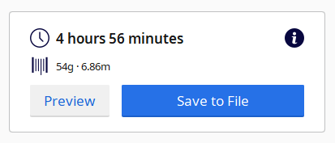Nú sá ég að módelið var innan þyngdartakmarkana og gat því fært skrána yfir á USB lykil og látið 3D prentarann byrja að prenta. Útkomuna má sjá á myndinni hér að neðan:
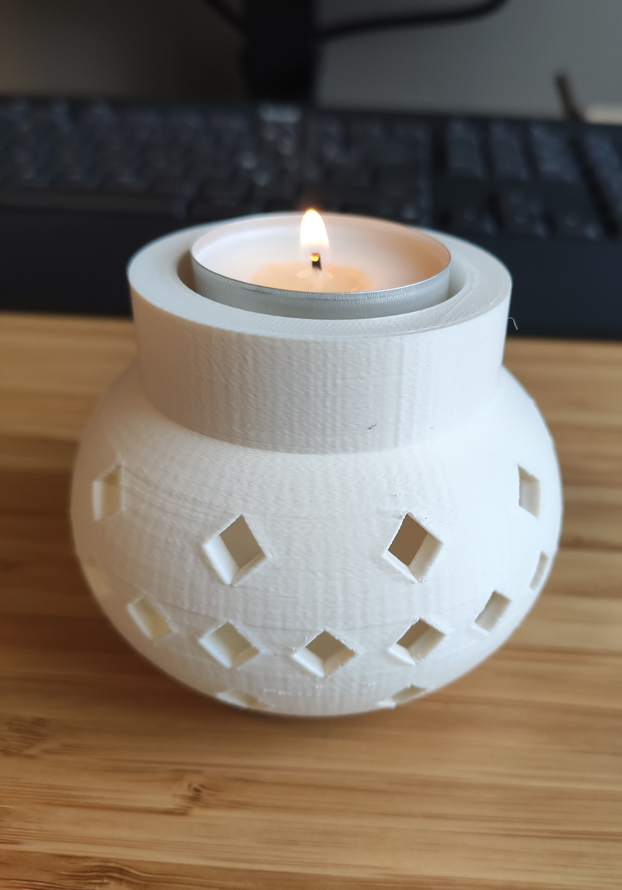 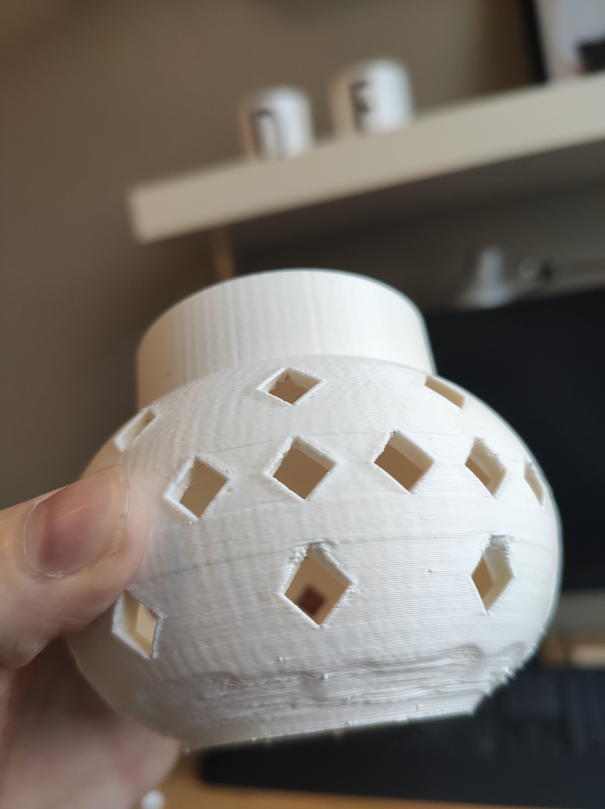Eins og sést á hægri myndinni var 3D prentunin ekki alveg flawless. Það kemur þó ekki mikið á óvart eftir niðurstöðurnar úr prófuninni sem var 3D prentuð í hópverkefninu, því hallinn neðst á stjakanum var einfaldlega meiri en sá halli sem prófunin sýndi fram á að 3D prentarinn réði við. Einnig sést á vinstri myndinni að þvermálið á holunni fyrir kertið er full vítt og hefði líklega komið betur út 2-3 mm þrengra. Ég er samt ánægð með útkomuna og þykir gaman að eiga skraut sem ég hannaði sjálf.
Í seinni hluta verkefnisins átti að velja sér hlut til að 3D skanna. Ég valdi að skanna inn fína nashyrninginn sem býr á hillunni í herberginu mínu. Hann má sjá á myndinni hér að neðan:
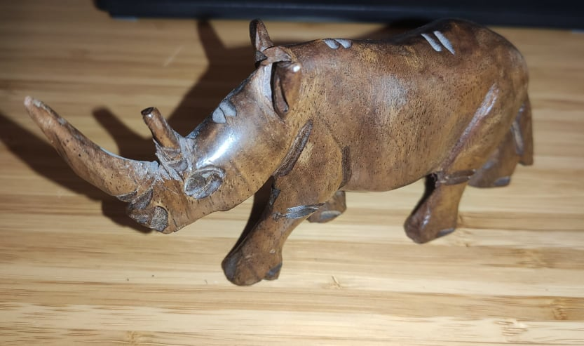Ég valdi að nota smáforritið Qlone til að skanna hlutinn, en það er app sem maður einfaldega hleður niður í símann sinn. Til að skanna inn nashyrninginn í Qlone þurfti ég svona köflótta mottu eins og sést á myndinni hér að neðan:
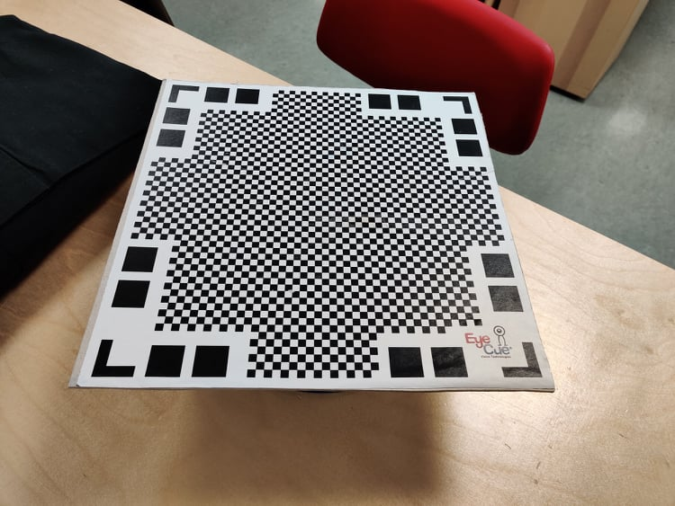Mottan var svo sett á svona snúningsdisk sem auðveldaði skönnunina til muna:
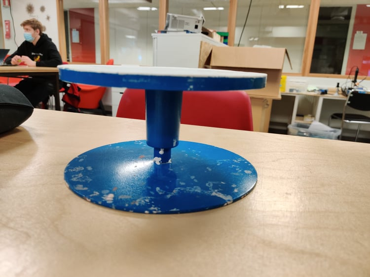Til að skanna hlutinn með Qlone opnaði maður forritið og valdi "+". Svo staðsetti maður hlutinn á köflóttu mottunni á snúningsdisknum og beindi myndavélinni á símanum að honum. Þá birtist hjúpur utanum hlutinn. Þá valdi maður upptöku (takki með rauðum punkti) og sneri disknum þar til allir reitir hjúpsins voru orðnir glærir. Eftir að skönnuninni var lokið í eitt skipti sneri maður hlutnum á hliðina og framkvæmdi aðra skönnun á sama hátt. Seinni skönnuninni var þá bætt ofan á þá fyrri sem skilaði sér í skýrari smáatriðum. Útkomuna úr skönnuninni má sjá í myndbandinu hér að neðan:
Eins og sjá má í myndbandinu heppnaðist skönnunin nokkuð vel og meira að segja smáatriði eins og grunnar línur sjást vel, en aðallega öðru megin. Það er vegna þess að í seinni skönnuninni, sem bætti við smáatriðum, var nashyrningurinn lagður á hliðina og því bættust einungis smáatriði á þá hlið sem vísaði upp. Það er spurning hvort útkoman hefði ekki verið betri ef ég hefði sleppt því að snúa nashyrningnum á hlið og endurtekið skönnunina í sömu stöðu og fyrri skönnunin. Þá hefði samt neðri hluti hans ekki komið eins skírt út. Við sjáum líka að hornið fremst á dýrinu vantar.
Þrátt fyrir að skönnunin hafi ekki komið fullkomnlega út var engu að síður skemmtilegt og lærdómsríkt að kynna sér og prófa að nota þessa tækni. Ég er ánægð með útkomuna þrátt fyrir að það hafi vantað dálítið upp á smáatriðin á annari hlið dýrsins.
Ég hélt vel utanum þann tíma sem fór í verkefnið. Tímaskráningu eftir verkþáttum má sjá á myndinni hér að neðan.
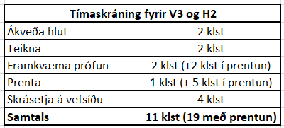